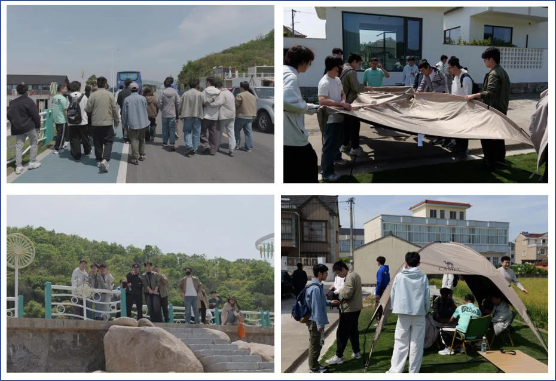

凝心聚力，踏浪前行
——iMED团队赴宁波象山春游团建活动圆满成功
春意正浓，海风微暖。为了让大家从紧张的科研节奏中暂时抽离，好好放松一下紧绷的神经，2026年4月28日至29日，iMED团队的小伙伴们暂别了熟悉的实验室，一同前往风景秀丽的宁波象山，开启了一场为期两天的春日之旅。这次出行没有繁重的任务，只有山水间的惬意和彼此的陪伴，让我们在欢声笑语中，真切感受到了iMED大家庭的温暖。
迎着晨光，欢乐出发。4月28日上午8点半，大家准时在慈溪医工所集合。iMED春游已成为每年固定的传统，大家可以借此机会一起走出实验室，享受大自然的美好。一路上，车厢里的气氛格外轻松，大家聊着生活趣事，分享着最近的见闻，约一个半小时的车程，在愉快的谈笑声中很快就过去了。
抵达象山斑斓海岸平台时，广阔无垠的蔚蓝大海瞬间治愈了所有人。色彩斑斓的水上平台与碧海蓝天相映成趣，极具设计感的蓝色篮球场更是充满了青春活力。大家吹着清凉的海风，听着阵阵海浪声，纷纷拿出手机记录下这美好的瞬间。在这里，平日里那些繁杂的科研思绪都被海风吹散了，只剩下全身心拥抱自然的松弛与自在。
中午，团队来到了当地有名的“雪连农家乐”。象山的海鲜果然名不虚传，一桌地道的海鲜大餐和特色农家菜，让大家大饱口福。围坐在一起，品尝着鲜美的鱼虾，聊着天南地北的话题。赵一天老师也和大家亲切交谈，关心着每个人的近况，现场气氛温馨又融洽。这顿充满烟火气的午餐，不仅满足了味蕾，更让大家在轻松的氛围中，心与心的距离更近了。
午休过后，行程显得格外从容。下午1点，大家来到了“最北营海风巷子”。这里有着别具一格的沿海风情，草坪上“MEET SEA BREEZE”的艺术装置在海风中显得格外惬意。大家在观海露台的遮阳伞下闲坐，点上一杯饮品，三五成群地聊着天，眺望着远处的风车与海面，享受着难得的慢节奏时光。

下午2点，团建迎来了大家最期待的环节——草坪烧烤。在“田园逸家民宿”宽阔的草坪上，团队的老师们带头，大家一改科研时的严谨，纷纷化身“烧烤达人”。有人负责生火，有人负责串肉，有人负责翻烤调味，分工明确，配合默契。不一会儿，滋滋作响的烤肉香气便弥漫在绿意盎然的草坪上。在这里，没有实验室里的严肃，只有团队成员之间最纯粹的友谊和欢笑。老师和同学们打成一片，充分展现了iMED团队亦师亦友、平等和谐的氛围。
经过一整天充实而欢乐的活动，当晚大家在民宿安然入睡，享受着海边乡村特有的宁静，彻底放松了身心。4月29日，大家在鸟语花香中自然醒，没有了早起的闹钟，只有透过窗户洒进来的温暖阳光。吃过早饭后，带着满满的不舍与美好的回忆，团队踏上了返程的路途。